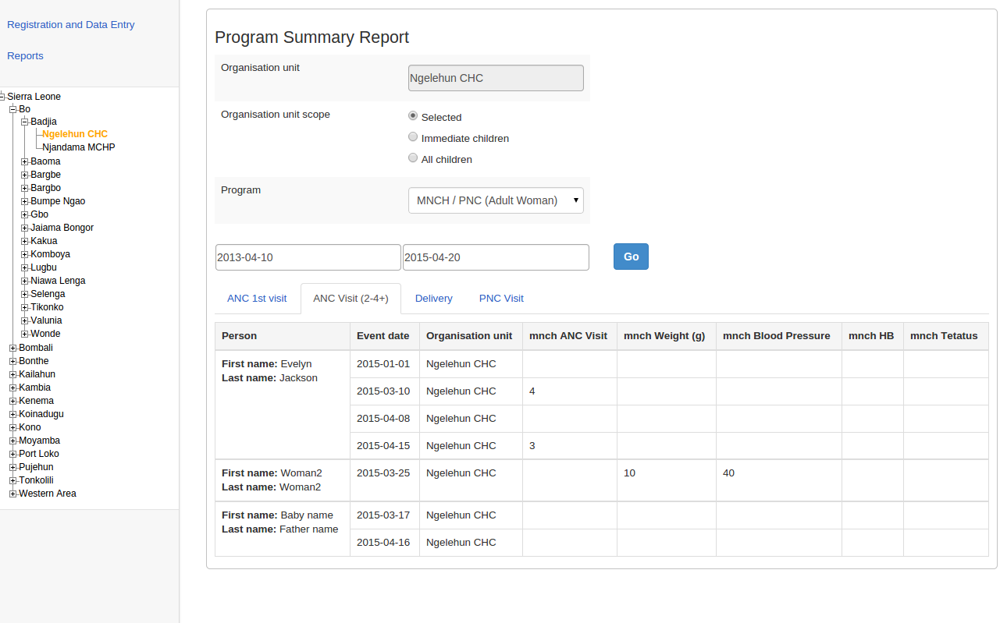

Open the Tracker Capture app.
Click Reports.
Select a report type.
Table 26.2. Report types in Tracker Capture
| Report type | Description |
|---|---|
|
Program summary |
A summary report for a particular program, organisation unit and time frame. The report consist of a list of TEIs and their records organised based on program stages. |
|
Program statistics |
A statistics report for a particular program. The report provides for example an overview of drop-outs or completion rates in a given time frame at a particular organisation unit. |
|
Upcoming events |
A tabular report showing tracked entity instances and their upcoming events for a selected program and time. You can sort the columns and search the values. Show/hide operations are possible on the columns. You can also export the table to Microsoft Excel. |
|
Overdue events |
A list of events for a selected program. The report displays a list of TEIs and their events that are not completed on time. You can sort the columns and search the values You can also export the table to Microsoft Excel. |
Example 26.4. Program summary report
|  |
The summary report displays a list of TEIs and their records for "MNCH/PNC (Adult Woman)" program. The records are organized in the form of tabs where each tab is a program stage. The columns in the table are data elements which are configured to be displayed in reports under program stage definition.